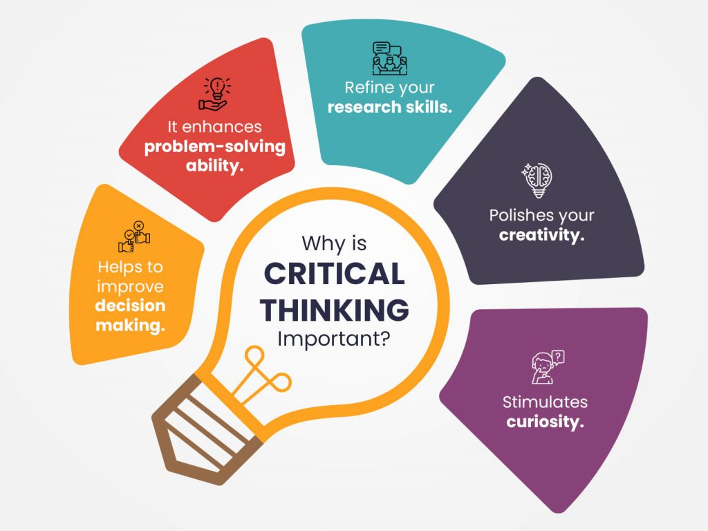
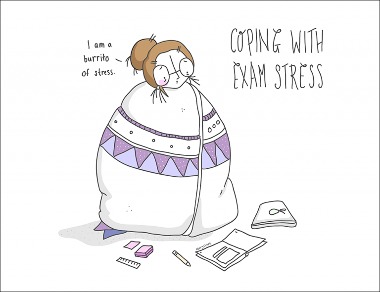
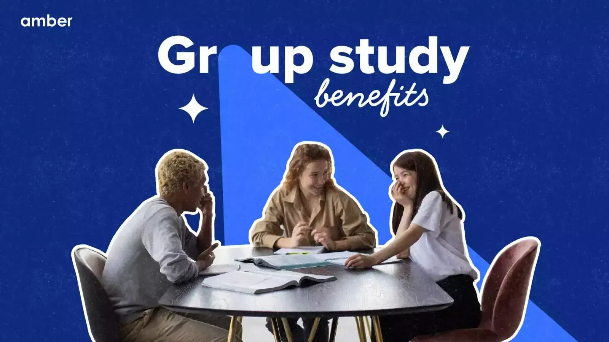
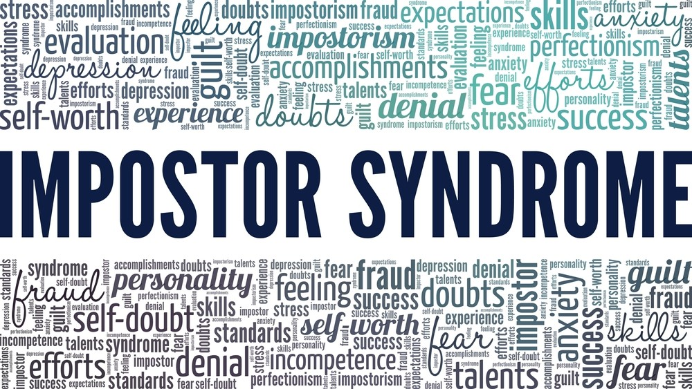
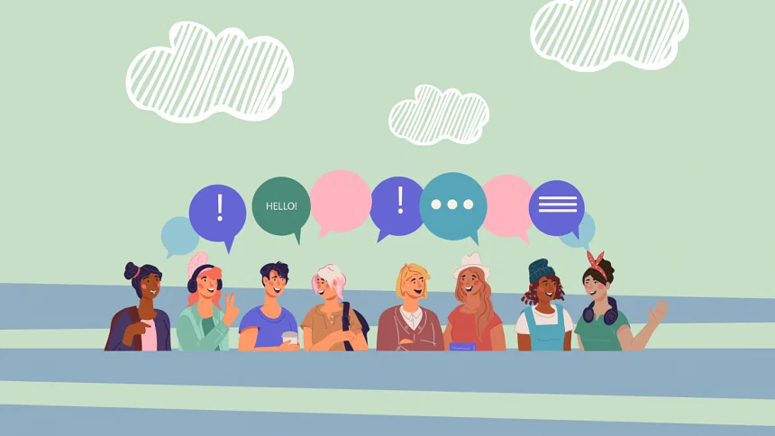

Embark on an extraordinary
learning journey with our educational content blogs. Here knowledge and innovation collide.
Education,Learning-July 20,2023
Power of Lifelong Learning: How to Keep Growing and Improving It's no secret that the world is ever-changing and evolving. It seems like everyday technology advances, the way we do
business changes, and what was trendy yesterday can..........Read more
Sergey Campbill

Education,Learning-July 20,2023
The Benefits of Critical Thinking & How to develop it
Before we proceed to understand the importance and benefits of..........Read More
Sergey Campbill
Education,Learning-July 20,2023
Understanding Emotional Intelligence in the Classroom
Emotional intelligence has been, for some time now, a buzzword..........Read More
Sergey Campbill
Education,Learning-July 20,2023
The Role of Technology in Modern Education(2023)
In today's rapidly changing world, technology has become an..........Read More
Sergey Campbill
Unlock a world of innovative and cool
study tips to level up your learning experience! Let's dive in!!!

Tips,Guidance-July 27,2023
7 tips to help you cope with exam stress A little stress can be a good thing: it can be the motivational push that we need to get things done.However, sometimes, dealing with stress (especially during exam season) ..........Read
more
Lisa Johanson

Tips,Guidance-July 28,2023
The Benefits of Group Study: How to Make It Effective
Group study provides a supportive and collaborative learning ..........Read More
Lisa Johanson
Tips,Guidance-July 28,2023
Breaks for breakthroughs: The importance of taking breaks
Have you taken a break today? Anything counts, even if it was...........Read More
Lisa Johanson
Tips,Guidance-July 28,2023
How to make an effective study plan that actually works
A study schedule is a time-management plan that will help you achieve..........Read More
Lisa Johanson
Explore our career development
blogs, packed with cool insights to take you to new heights. These blogs are your roadmap to a brighter, more rewarding future.
Career,Growth-July 30,2023
How To Build Your Personal Brand To Boost Your Career What is a personal brand? In this guide, we'll discuss how personal branding boosts your career & share 7 personal brand building tips to create yours now..........Read
more
Charlotte Olivia

Career,Growth-July 30,2023
Overcoming Imposter Syndrome: Owning Your Success
Imposter Syndrome is a common phenomenon where..........Read More
Charlotte Olivia

Career,Growth-July 30,2023
The power of networking for your career: Building connections
In this digital age and increased connectivity, it is quintessential...........Read More
Charlotte Olivia
Career,Growth-July 30,2023
Embracing Change: A Guide to Rocking Career Transition
Are you facing redundancy and seeking a career transition? Do you..........Read More
Charlotte Olivia
Embark on a journey of inspiration
and triumph with our captivating success stories blogs. Get ready to be inspired and uplifted!!!
Success,Triumph-July 31,2023
From Startup to Success: The Story of a Tech Entrepreneur. Starting a business is never easy, but for tech entrepreneurs, it can be especially challenging. One such entrepreneur
is John, who founded a tech startup with the goal..........Read
more
Chris Ortyio
Success,Triumph-July 31,2023
From Garage to Global: Unforgettable Tech Startups'
In a world driven by innovation and technology, the success..........Read More
Chris Ortyio
Success,Triumph-July 31,2023
African tech talent and the global demand.
Can you believe it? There are already over 700,000 professional...........Read More
Chris Ortyio
Success,Triumph-July 31,2023
The Power of Perseverance: Inspiring Stories of Techies
Successful people never give up. They have a don't quit attitude that..........Read More

 Sergey Campbill
Sergey Campbill
 Lisa Johanson
Lisa Johanson

 Charlotte Olivia
Charlotte Olivia
 Chris Ortyio
Chris Ortyio